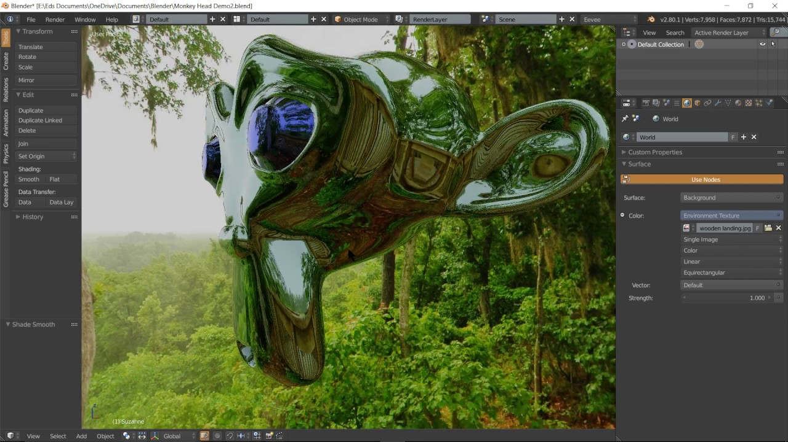

VRIG OCT 2018
Rapid VR prototyping with Tangible Landscape
Payam Tabrizian, Anna Petrasova, Vaclav Petras, Brendan Harmon, Helena Mitasova

North Carolina State University
Tangible Landscape
A tangible user interface powered by open source GIS
2013-present

Realtime 3D scanning

with Kinect sensor
Tanigble interaction with GIS
With Tangible Landscape you can hold a GIS in your hands - feeling the shape of the earth, sculpting its topography, and directing the flow of water.
How it works ?

GRASS GIS

- free and open source (reduced cost of the system, more flexibility)
- wide range of geospatial analyses (hydrology, remote sensing, vector network analysis, 3D rasters, ...)
- easy to script in Python
- fast algorithms in C/C++
Blender

- Free and open source 3d modelling and game engine software
- Easy scripting (Python)
- GIS and Virtual reality plugin
- High-quality real-time rendering and shading
Software Architecture

Interactions

| surface
| points
| lines
| areas
| areas
|
Landform and water bodies

Vegetated surfaces

Linear features, pathes

Camera control

Immersion
Realism

Road map: EVEE

- Realtime render engine (OpenGL 3.0)
Source: @huanghai0712
Tangible Landscape with robotic fabrication, streaming data, and autonomous construction

Bi-directionally coupling physical and digital landscapes
Resources